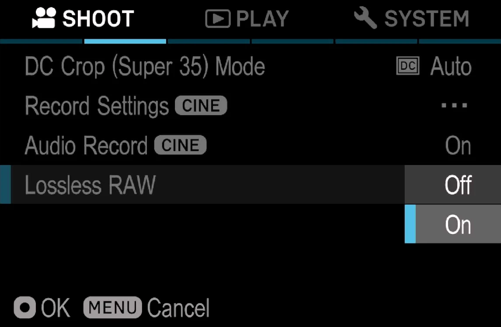

Records CinemaDNG losslessly compressed by the camera's own hardware codec, which the stock firmware never uses for video. A 3K 12-bit frame of 9.1 MB typically becomes about 3.2 MB. Not a single pixel value changes. Version v0.1.2test — a test build.
用相機自己的硬體編碼器錄無損壓縮的 CinemaDNG(原廠韌體從不拿它錄影)。 一張 9.1 MB 的 3K 12-bit 畫格通常變成約 3.2 MB,像素值一個都不變。 版本 v0.1.2test —— 這是測試版。
Thanks致謝
CorNy found that DaVinci Resolve plays a clip mixing compressed and uncompressed frames without flickering only when its first frame is uncompressed. So every take now keeps its first frame uncompressed — and mixed clips play cleanly in Resolve.
CorNy 發現:壓縮與未壓縮畫格混合的片段,只有在第一格是未壓縮時, DaVinci Resolve 才能正常播放、不會閃爍。所以現在每段拍攝的第一格都保留未壓縮 —— 混合片段在 Resolve 裡就能乾淨地播放。
SIGMA fp (not fp L) on firmware Ver.5.02 exactly. How to check.
SIGMA fp(不是 fp L),韌體必須剛好是 Ver.5.02。怎麼確認。
Open fpSup-Merge with fpSup-Lossless ticked. It can go on the same card as every other fpSup card, RAW-View included. With open gate, use OG3K v0.2.8a / OG2K v0.1.5a or later. Tick what else you want, then download the zip.
打開已勾好 fpSup-Lossless 的 fpSup-Merge。 它可以和其他所有 fpSup 卡放在同一張卡上,包括 RAW-View。搭配 open gate 時, 請用 OG3K v0.2.8a / OG2K v0.1.5a 或更新版。勾好其他想要的,然後下載 zip。
Fast Start 3 is an optional setting on that page. See How to use fpSup.
Fast Start 3 是那個頁面上的選項。見 fpSup 怎麼用。
Unzip. Copy AutoRun.txt, fpSup.BIN and the
FPSUPUI folder to the top level of the SD card the camera boots from, and
start the camera with the USB cable unplugged. All four boxes white means it loaded.
Details.
解壓縮。把 AutoRun.txt、fpSup.BIN 和
FPSUPUI 資料夾複製到相機開機用的 SD 卡最上層,不插 USB 線開機。
四格全白就是載入完成。詳細說明。
Open MENU → SHOOT, page 2 (CINE). Below Audio Record there is a new row, Lossless RAW: set it to On, then record CinemaDNG as usual.
打開 MENU → SHOOT 第 2 頁(CINE)。在「錄音」下面多了一列 Lossless RAW:設成 On,然後照平常錄 CinemaDNG。

| tested on the camera已在相機上測過 | not tested沒測過 |
|---|---|
| 3K (OG3K) 12-bit 29.97p to SD: 84–87% of frames compressed, every written frame decodes.3K(OG3K)12-bit 29.97p 寫 SD:84~87% 的畫格被壓縮, 寫下的每一格都能解碼。 | This release card itself has not been booted.這張發布卡本身還沒開機測過。 |
| 3K 12-bit 48p to an SSD for 15 minutes: about half of the frames compressed to the end, no stall.3K 12-bit 48p 寫 SSD 15 分鐘:到最後約一半畫格被壓縮,沒有卡住。 | UHD, 10-bit, and frame rates not listed here.UHD、10-bit,以及這裡沒列的格率。 |
| FHD and 3K compressed clips play back in the camera.FHD 與 3K 壓縮片段可在機內回放。 | Long SD takes past the camera's own auto-stop.超過相機自動停止時間的長時間 SD 錄影。 |
Nothing to undo first: Lossless saves no setting. Delete the files (or take the card out) and switch the camera off. More on removing.
不用先改回什麼:Lossless 不存任何設定。刪掉檔案(或拔卡),然後關機。 移除的詳細說明。
| what happens發生什麼 | what to do怎麼辦 |
|---|---|
| No Lossless RAW row in the SHOOT menuSHOOT 選單沒有 Lossless RAW | The card did not load. Check that all four boxes turned white at start-up; see general problems.卡沒有載入。 確認開機時四格都變白;見一般問題。 |
| Files are as big as before檔案跟以前一樣大 | Lossless RAW is Off again after every power-on. Set it to On.每次開機 Lossless RAW 都回到 Off。把它設成 On。 |
| Some frames are big, some small有些畫格大、有些小 | Expected: frames the codec could not finish in time are written uncompressed.正常:編碼器來不及壓的畫格會寫成未壓縮。 |
| The camera does not respond相機沒反應 | Take the battery out (USB unplugged). Bring what you saw to the Discord.把電池拿出來(不插 USB 線)。 把你看到的情況帶到 Discord。 |